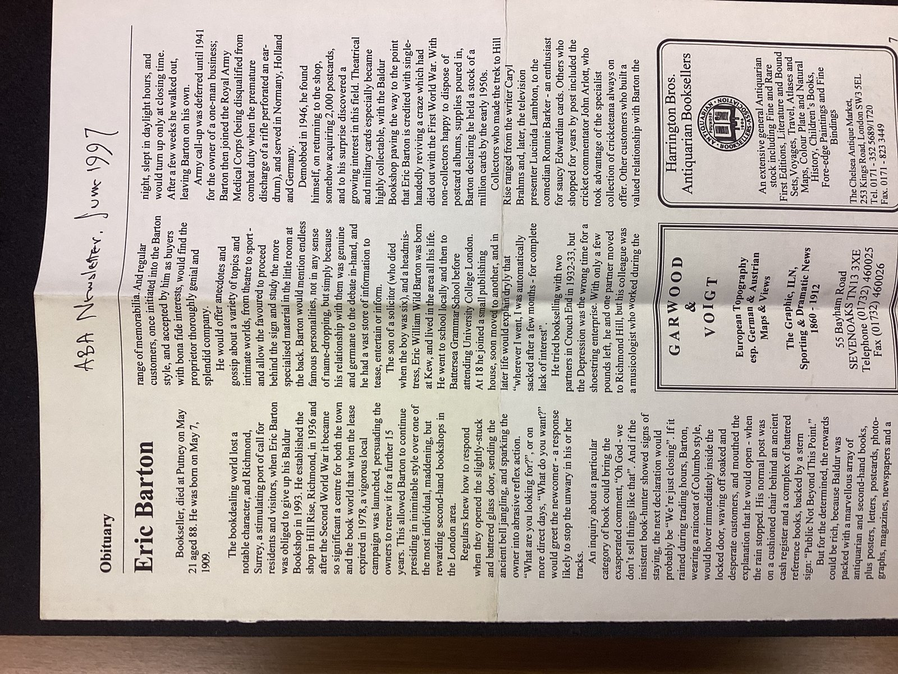

Maroquinerie Rooted in Alpine Warmth & Handcraft
Born from a desire to reconcile the tactile comfort of high-altitude sheepskin with the architectural discipline of bespoke saddlery, Shearling Tote crafts carryalls that endure across generations.
The Modern Architectural Carryall
A truly great tote bag must navigate seamlessly from breezy metropolitan avenues to snowy alpine weekends. Our silhouettes are designed with generous gusset depth, structural base stays, and comfortable drop handles.
By pairing high-pile curly sheepskin with rich caramel saddle leather, we achieve a dynamic visual texture that complements fine cashmere tailoring, winter overcoats, and weekend denim with equal poise.
- Engineered weight distribution ensuring effortless shoulder carrying even when fully laden.
- Discreet magnetic closure mechanism keeping interior contents secure on the move.
- Reinforced base corners that prevent wool matting and preserve structural crispness.
The Artisan Workbench at 181 Mercer Street
Inside our SoHo flagship atelier, time slows down. There are no automated conveyor belts or computerized die-cutters. Every piece of leather is inspected by hand, mapped with tailor's chalk, and hand-cut with razor-sharp English round knives.
Our craftspeople train under veteran master leatherworkers from Florence and Paris, dedicating hundreds of hours to mastering skiving angles, edge-creasing irons, and symmetrical stitch tensions.
- Manual leather skiving that feathers seam edges for featherweight comfort.
- Custom-made rosewood and boxwood bone folders for shaping interior welt seams.
- Natural non-toxic water-based starch adhesives replacing harsh synthetic cements.

Hand-Burnished & Beeswax Glazed Edges
The mark of true luxury leatherwork lies in edge finishing. Rather than slapping quick coats of rubbery plastic edge paint that crack after one season, we bevel raw strap edges with diamond cutters.
The edge fibers are then hand-rubbed with natural gum tragacanth, heated iron creasers, and organic New York beeswax until friction creates a glassy, impenetrable burnish that will never peel.
- Five successive stages of hand-sanding from 400 to 2,000 grit micro-abrasives.
- Friction burnishing with dense cocobolo wood slickers sealing raw dermal fibers.
- Final hot beeswax glaze repelling moisture, humidity, and daily handle wear.